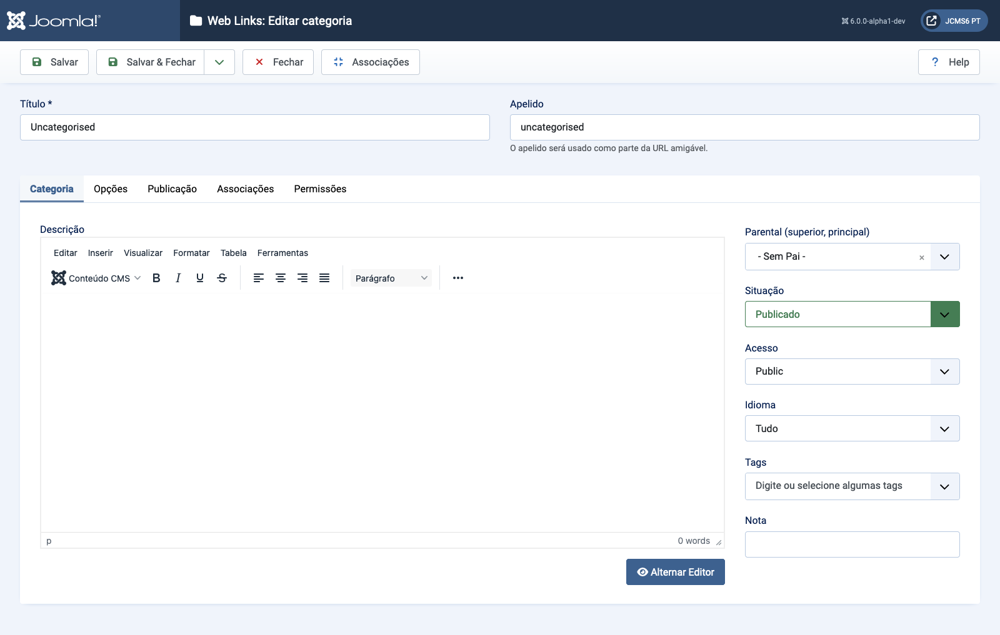

Joomla Help Screens
Links da Web: Editar Categoria
Descrição
A página Web Links: Editar Categoria é usada para criar uma nova Categoria ou editar uma existente. Note que você precisa criar pelo menos uma Categoria de Web Link antes de poder criar um Web Link. Além disso, Categorias de Web Links são separadas de outros tipos de Categorias, como as de Artigos, Banners e Feeds de Notícias.
Elementos Comuns
Alguns elementos desta página são abordados em artigos de Ajuda separados:
Como Acessar
- Selecione Componente → Web Links → Categorias do menu do Administrador. Então...
- Selecione o botão Novo na Barra de Ferramentas para adicionar uma nova Categoria. Ou...
- Selecione um Título da coluna de Títulos para editar uma Categoria existente.
Captura de tela

Campos de Formulário
- Título O Título para este item. Isso pode ou não ser exibido na página, dependendo dos valores dos parâmetros que você escolher.
- Alias O nome interno do item. Normalmente, você pode deixar esse campo em branco e o Joomla preencherá um valor padrão, com o Título em letras minúsculas e com hífens no lugar de espaços.
Aba de Categoria
Painel esquerdo
- Descrição A descrição do item. As descrições de Categoria, Subcategoria e Links da Web podem ser exibidas nas páginas da web, dependendo das configurações de parâmetros.
Traduzido por openai.com